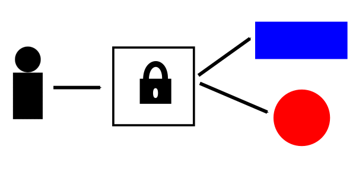
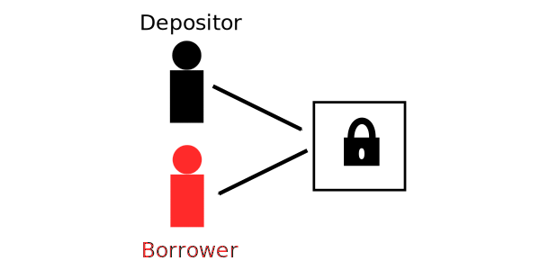
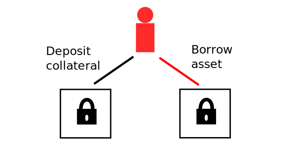
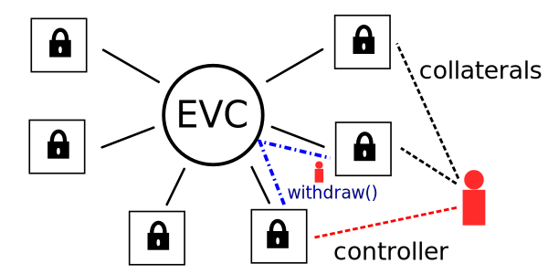

<!doctype html>
<html lang="en">
  <head>
    <meta charset="utf-8">

    <title>Euler EVC: Workshop 1</title>

    <meta name="author" content="Doug Hoyte">

    <meta name="apple-mobile-web-app-capable" content="yes" />
    <meta name="apple-mobile-web-app-status-bar-style" content="black-translucent" />

    <meta name="viewport" content="width=device-width, initial-scale=1.0, maximum-scale=1.0, user-scalable=no, minimal-ui">

    <link rel="stylesheet" href="../reveal.js/css/reveal.css">
    <link rel="stylesheet" href="../reveal.js/css/theme/black.css" id="theme">

    <!-- Code syntax highlighting -->
    <link rel="stylesheet" href="../reveal.js/lib/css/zenburn.css">

    <!-- Printing and PDF exports -->
    <script>
      var link = document.createElement( 'link' );
      link.rel = 'stylesheet';
      link.type = 'text/css';
      link.href = window.location.search.match( /print-pdf/gi ) ? '../reveal.js/css/print/pdf.css' : '../reveal.js/css/print/paper.css';
      document.getElementsByTagName( 'head' )[0].appendChild( link );
    </script>

    <!--[if lt IE 9]>
    <script src="../reveal.js/lib/js/html5shiv.js"></script>
    <![endif]-->

    <style>
      .reveal .slides h1, .reveal .slides h2, .reveal .slides h3 {
        text-transform: none;
      }

      .container {
        display: flex;
      }

      .container > div {
        flex: 1;
      }

      .left {
        left:-8.33%;
        text-align: left;
        float: left;
        width:50%;
        z-index:-10;
      }

      .right {
        left:31.25%;
        top: 75px;
        text-align: left;
        float: right;
        z-index:-10;
        width:50%;
      }

      .small-text {
        font-size: 85%;
      }

      .reveal pre {
        width: unset;
      }

      .topic-slide {
      }
    </style>
  </head>

  <body>
    <div class="reveal">
      <div class="slides">

<!------------------------------------------------------->


<section data-markdown><script type="text/template">

## Euler EVC: Workshop 1

</script></section>


<section data-markdown><script type="text/template">

## Time Value of Money

* Would you rather have <span>$</span>100 right now, or $100 a year from now?
  * Correct answer is right now: You could lend that money out and earn interest for the year
* If interest rate is 10%, you'll end up with <span>$</span>110 after a year instead of $100
  * So, <span>$</span>100 now is worth $110 a year from now
  * "Time is money"

</script></section>


<section data-markdown><script type="text/template">

## Lending Markets

* Lending markets are exchanges where money is swapped for time
* Passive lending pools like Compound/AAVE/Euler are Uniswap-style Automated-Market Makers (AMMs) for these markets

</script></section>


<section data-markdown><script type="text/template">

## Over-Collateralisation

* Borrowers must ensure they always have *more* money deposited in the system than the size of their loans
* As described this sounds useless, but is in fact very common
  * Consider a mortgage...

</script></section>


<section data-markdown><script type="text/template">

## Mortgage Example

* Suppose want a house worth <span>$</span>1 million. You save up <span>$</span>50k for a down-payment, take out a $950k mortgage, and buy it:

|| Assets      | Debt |
|--| ----------- | ----------- |
|House|$1,000,000||
|Mortgage||$950,000|
|**Total**|$1,000,000|$950,000|

* You are *over*-collateralised (so long as your house retains its value)

</script></section>


<section data-markdown><script type="text/template">

## Effect of Price Movements

* If the value of your house decreases to $950k (a 5% drop) you will no long be over-collateralised
  * In fact you are wiped out
* On the other hand, suppose your house's value increases to $1.05 million (a 5% rise)
  * If you sold the house and repaid the mortgage, you'd be left with $100k
    * *Double* the amount you started with

</script></section>


<section data-markdown><script type="text/template">

## Leverage Ratio

* How is it possible for a 5% price movement to result in a 100% gain or loss? **Leverage**.
* There are several ways to quantify leverage. *Debt-to-Equity* is the most common:

    ```js
        equity = assets - debt
        leverage = debt / equity
    ```

* Our mortgage example:

    ```js
        leverage = $950k / ($1m - $950k) = 19
          -> 19x leverage
    ```
</script></section>


<section data-markdown><script type="text/template">

## Leverage

Leverage magnifies gains and losses


</script></section>


<section data-markdown><script type="text/template">

## Looping

* Leveraged positions used to be setup by "looping"
  * Deposit, borrow, swap, repeat
  * This is gas-inefficient
* Can also be accomplished with flash loans, or natively with flash liquidity (more on this soon)

</script></section>


<section data-markdown><script type="text/template">

## Interest

* Like all markets, the time-money exchange has two sides
* In addition to borrowers, there are also depositors
  * Depositors earn compound interest over time, depending on the borrowing activity

</script></section>


<section data-markdown><script type="text/template">

## Compound Interest Formula

$P'=P(1+\frac{r}{n})^{nt}$

* $P$ : Original principal
* $P'$ : New principal
* $r$ : Interest rate
* $n$ : Number of compoundings
* $t$ : Loan duration

</script></section>


<section data-markdown><script type="text/template">

## Simple Interest

* Also known as "nominal" interest rate
* Assume we start with 1 dollar ($P=1$) and loan is for 1 year ($t=1$)
* If we have a 5% interest rate and there is only 1 compounding period, we pay or earn exactly 5% interest:

$(1+\frac{0.05}{1})^{1 \times 1}=1.05$

</script></section>


<section data-markdown><script type="text/template">

## Semi-Annual Compounding

* Suppose we have 2 compounding periods (each 6 months)

$(1+\frac{0.05}{2})^{2}=1.050625$

* In the first period we earn/pay 2.5% interest on the principal
* In the second period we earn/pay 2.5% interest on the principal *and* the interest from the first payment

</script></section>


<section data-markdown><script type="text/template">

## More Frequent Compounding

* Monthly: $(1+\frac{0.05}{12})^{12}=1.051161897881733$

* Daily: $(1+\frac{0.05}{365})^{365}=1.051267496467463$

* Per second: $(1+\frac{0.05}{365 \times 86400})^{365 \times 86400}=1.051271096334355$

* Continuous: $e^{0.05} = 1.051271096376024$

</script></section>


<section data-markdown><script type="text/template">

## Carry Trade

* People with leveraged positions are both borrowers *and* depositors: They pay interest on borrows but earn interest on deposits
* A carry trade is creating a levered position on a low-interest borrow against a high-interest collateral
* As long as prices don't move (or are hedged) this trade earns *leverage-magnified* net interest
  * Interest-rate arbitrage is key to efficient lending markets

</script></section>


<section data-markdown><script type="text/template">

## ERC-4626 Tokenized Vault Standard

* A popular standard for contracts that implement yield-bearing vaults
  * A standard means that integrations can be written once and used for multiple diverse protocols/applications
* We believe that the next-generation of lending platforms will be built on ERC-4626

</script></section>


<section data-markdown><script type="text/template">

## Active Vaults

* Typical ERC-4626 vaults are active: The contract itself re-invests deposits according to its strategy:



</script></section>


<section data-markdown><script type="text/template">

## Passive Vaults

* Passive vaults do nothing with the assets until borrowers arrive:



</script></section>


<section data-markdown><script type="text/template">

## Shares

* When you deposit into a vault, you receive *shares*
* These shares are ERC-20 compatible tokens
* If you perform no actions, the amount of shares you own does not change over time
  * As interest accrues, each share is redeemable for a growing quantity of the underlying asset

</script></section>


<section data-markdown><script type="text/template">

## Exchange Rate

* A vault's assets consist of its cash (unloaned) and borrows (loaned out):

    ```js
        assets = cash + totalBorrows
    ```

    * As interest is accrued, `totalBorrows` increases over time

* Shares entitle holders to a proportional amount of the vault's assets:

    ```js
        exchangeRate = assets / totalShares
    ```

</script></section>


<section data-markdown><script type="text/template">

## Vaults Everywhere

Concept: Use ERC-4626 vaults both for borrowing **and** storing collateral



</script></section>


<section data-markdown><script type="text/template">

## Problem

* How do you prevent a user from withdrawing collateral after taking a borrow?
  * Vaults need to coordinate in some way...

</script></section>


<section data-markdown><script type="text/template">

## Ethereum Vault Connector


</script></section>


<section data-markdown><script type="text/template">

## Non-Invasive

* The EVC is designed to be easily integrated with any ERC-4626 vault
* We've created a minimal integration layer that can be incorporated into most existing vault systems

</script></section>


<section data-markdown><script type="text/template">

## Collateral Set

* Every account chooses its set of collateral vaults, which the EVC records:


</script></section>


<section data-markdown><script type="text/template">

## Controller

* To borrow from a vault, an account sets it as its controller:


</script></section>


<section data-markdown><script type="text/template">

## Trusting Controllers

* When you have installed a vault as your controller, you are giving it total control of your account
  * If you try to withdraw from a collateral vault, it will ask your controller vault if this action is allowed
  * Only the controller itself can release its control over your account (usually when you repay)
  * *You are trusting the controller vault with your assets*

</script></section>


<section data-markdown><script type="text/template">

## Vaults Choose Collaterals

* To allow borrowing, each vault chooses a set of vaults it accepts as collateral
  * *The vault is trusting these collateral vaults to behave honestly and to integrate correctly with EVC*
* If a vault does not accept any collaterals, no borrowing is allowed
  * But this vault can still itself be used as collateral

</script></section>


<section data-markdown><script type="text/template">

## Authn/Authz

* Separation of concerns:
  * EVC is responsible for **authentication**
    * Which account is requesting the action?
  * Vaults are responsible for **authorization**
    * Is this account allowed to perform the action?

</script></section>


<section data-markdown><script type="text/template">

## Liquidation

When a controller vault needs to liquidate, it impersonates the violator account:



</script></section>


<section data-markdown><script type="text/template">

## Multi-call

* In addition to maintaining the collateral/controller sets, the EVC is also a general-purpose multi-call contract
* Users create **batches** which are lists of calls:
  * Call the same vault multiple times
  * ...or call multiple vaults
  * ...or call completely unrelated contracts (swapping, wrapping, etc)

</script></section>


<section data-markdown><script type="text/template">

## Liquidity Deferral

* Controller vaults are only asked if collateral is sufficient at the *end* of a batch
* This means that accounts can temporarily violate liquidity requirements, as long as they solve it by end of batch
* So, leveraged positions can easily be setup with borrow, swap, deposit
  * No looping or flash loans required

</script></section>


<section data-markdown><script type="text/template">

## callThroughEVC

With a "callback" pattern, vaults can always assume checks are deferred, simplifying implementation:


</script></section>


<section data-markdown><script type="text/template">

## More To Come...

* Although it is a fairly small contract, we have only begun to scratch the surface of what the EVC enables
* See you next time!

</script></section>


<!------------------------------------------------------->


      </div>

    </div>

    <script src="../reveal.js/lib/js/head.min.js"></script>
    <script src="../reveal.js/js/reveal.js"></script>

    <script>

      // Full list of configuration options available at:
      // https://github.com/hakimel/reveal.js#configuration
      Reveal.initialize({
        controls: true,
        progress: true,
        history: true,
        center: true,

        transition: 'none', // none/fade/slide/convex/concave/zoom

	math: {
          mathjax: '../lib/MathJax/MathJax.js',
          config: 'TeX-AMS_SVG-full',
	},

        // Optional reveal.js plugins
        dependencies: [
          { src: '../reveal.js/plugin/markdown/marked.js', condition: function() { return !!document.querySelector( '[data-markdown]' ); } },
          { src: '../reveal.js/plugin/markdown/markdown.js', condition: function() { return !!document.querySelector( '[data-markdown]' ); } },
          { src: '../reveal.js/plugin/highlight/highlight.js', async: true, callback: function() { hljs.initHighlightingOnLoad(); } },
          { src: '../reveal.js/plugin/math/math.js', async: true },
        ]
      });

    </script>

  </body>
</html>
